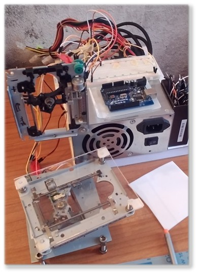
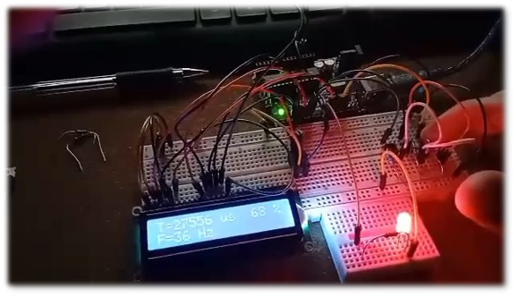
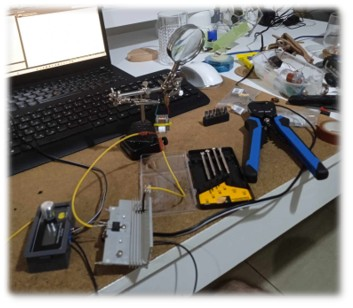
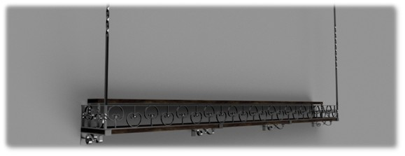
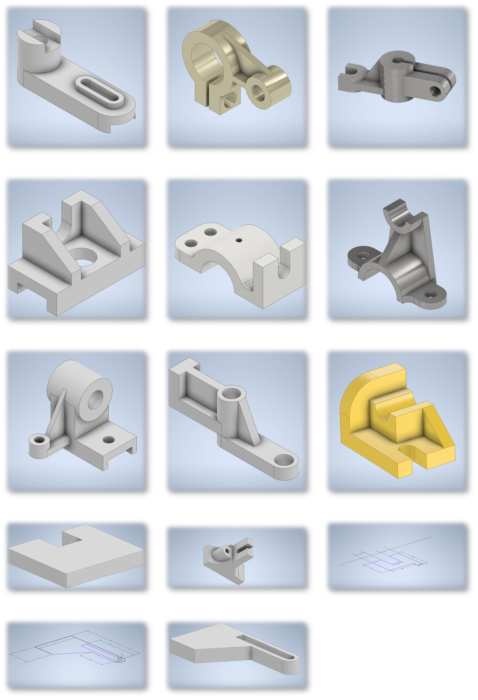
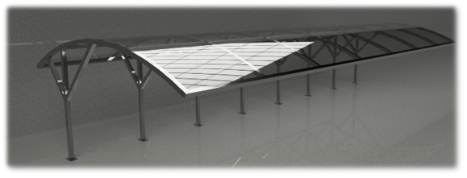

CREATIVE ENGINEERING & DIY
A collection of custom microcontrollers, hardware hacks, custom mechanics, and physical prototypes.
DIY MAKER PROJECTS
Handcrafted mechanical and electronic prototypes developed using recycled parts, microcontrollers, and rapid fabrication.

Built using an Arduino microcontroller, recycled DVD-drive stepper motors, and a PC power supply. The plotter is controlled using the open-source GRBL firmware to write and sketch designs.

An ergonomic computer mouse built using custom-designed 3D printed structural parts, integrated battery power channels, and internal optical sensor circuitry.
ELECTRONICS & EMBEDDED SYSTEMS
Custom hardware circuits focusing on signal modulation, power control, and microcontroller-based signal generators.

An embedded signal generator using an Arduino and breadboard setup, equipped with an LCD panel to monitor frequency output and signal modulation status in real-time.

Analog control circuits designed to modulate power conversion, ideal for communications, motor control, and custom low-voltage electrical systems.
3D CAD MODELING & RENDERS
Precision structural blueprints, ornamental architectural structures, and technical machine component modeling.

Parametric modeling of a suspended wall shelf with ornate ironwork patterns and structural stability calculations.

A detailed suite of structural engineering parts, brackets, and machine mounts designed for precise assembly and fabrication.

A full structural frame design for protective canopy roofing, showcasing structural steel layouts and joint geometry.